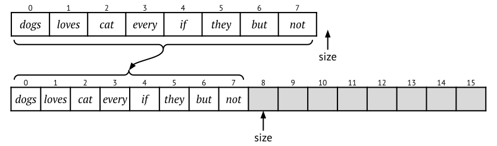
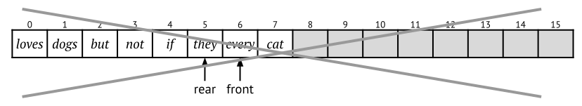
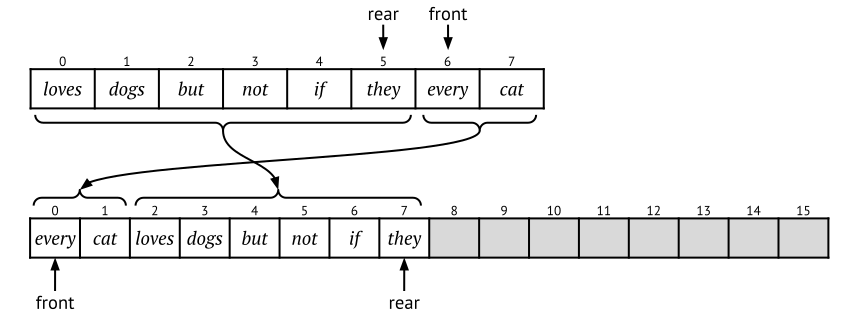

6.4 Dynamic arrays
The problem with array-based stacks and queues is that they have limited capacity. Recall that arrays are fixed-size, so we cannot change the size once we have initialised it. To solve this problem we have to make the internal array dynamic – meaning that we increase the size of the array when it becomes full. (We should also shrink the array to save space whenever it contains too few elements, more about that below in Section 6.4.5.)
If you are used to programming in Python or Javascript, you might think that their lists (or “arrays” as they are called in Javascript) are basic and simple objects, but they are not. In fact they are implemented as dynamic arrays, just in the same way as we will discuss in this section. Other programming languages such as Java, C, etc., have fixed-size arrays, and this is a much more primitive data type. The main reason for this is that a fixed-size array always use the same amount of memory: the programming language can allocate space for it already when the array is created – and this will not have to change during the whole life of the array. An array is always “tight” – neighbouring elements will be neighbours in the computer memory too. This means that looking up a specific array index is really fast (constant-time in fact), since we can infer the memory position from the array index instantly.
A Python-style list does not have a fixed length: you can add and remove elements without having to worry about memory allocation. But in all other respects it behaves just like a fixed-size array, meaning that normal array operations such as getting and setting values at a specific index are still efficient. Adding and removing elements are also efficient, but note that it is only efficient to append to (and remove from) the end of the array! If you try to insert elements in the beginning it becomes awfully slow. Compare these two very simple Python loops:
list = [] list = []
for k in range(100_000): for k in range(100_000):
list.append(k) list.insert(0, k)The left loop is really fast, because the append
operation adds elements to the end of the list. On the contrary, the
right loop is slow because it inserts elements at the beginning.
6.4.1 Resizing the internal array
The basic idea is to not try to resize the internal array – as we already mentioned it is not possible to resize it. Instead we create a new array of a larger size, and copy over the elements from the old array to the new. Afterwards we can forget about the old array because it will not be used anymore.
resize(stack, capacity):
oldArr = stack.arr // Remember the old internal array
stack.arr = new Array(capacity) // Create a new internal array
for i in 0 .. oldArr.size-1:
stack.arr[i] = oldArr[i] // Copy over all elements to the new array
Figure 6.6 shows how resizing works. Note that resizing the internal array is a slow operation, it has to iterate through all elements in the list and copy each one. This is of course linear in the number of elements, O(n). (Processors have special hardware instructions for copying chunks of memory, which are a lot faster than a simple loop – but even those are linear in the number of elements.)
This means that we do not want to resize the array too often, so the question is how often do we want to resize? Or in other words, how large should the new internal array be – what should be its capacity? How about increasing the capacity with 100 elements, every time the array becomes full:
push(stack, value):
if stack.size == stack.arr.size: // If the internal array is full,
capacity = stack.size + 100 // increase its capacity with 100 elements
resize(stack, capacity)
stack.arr[stack.size] = value
stack.size += 1Suppose that we want to push n
values to an empty stack (where n is
much larger than 100). How many times does an array element get copied
from the internal array to the new array? (That is, how many times will
the for-loop in resize be iterated?) Every 100’th time the
internal array becomes full and we need to resize it, so we get the
following internal resizings:
resize(200) |
copying | 100 | elements |
resize(300) |
copying | 200 | elements |
| . . . | |||
resize(n-100) |
copying | n-200 | elements |
resize(n) |
copying | n-100 | elements |
In total, we execute the copying statement the following number of times:
100 + 200 + \cdots + (n-200) + (n-100) = 100 \cdot \sum_1^{n/100} i = n(n-1)/50 \in O(n^2)
This means that the program takes quadratic time, O(n^2), not linear! Suppose for example that n is 1 million. Using the formula above, the number of times an array element gets copied is around 20 billion – it copies on average 20,000 elements for every push to the stack. This is of course not acceptable.
But what if we increase the capacity with 1,000 elements instead? This will unfortunately not help much – the reasoning above still holds, and the complexity of pushing n to the stack will still be quadratic, O(n^2).
6.4.2 Doubling the size
One way to think about the problem is this: as the array gets bigger, resizing it gets more expensive. So, to make up for that, when the array is bigger we need to grow it by more, so that we don’t have to resize as often. One way to do this is to always double the array size when it gets full. This turns out to work well!
push(stack, value):
if stack.size == stack.arr.size: // If the internal array is full,
capacity = stack.size * 2 // double its capacity
...Suppose that we again push 1 million elements onto an empty stack. As
before we start with a capacity of 100 elements. When will
resize be called, and how many elements get copied each
time?
resize(200) |
copying | 100 | elements |
resize(400) |
copying | 200 | elements |
resize(800) |
copying | 400 | elements |
| . . . | |||
resize(819,200) |
copying | 409,600 | elements |
resize(1,638,400) |
copying | 819,200 | elements |
You can see that the array gets resized a whole lot at the beginning – but as it gets bigger, it gets resized less and less often. We can read off how many elements get copied:
100 + 200 + 400 + \cdots + 409,600 + 819,200 = 1,638,300
Compare this with the previous version where we increased the capacity with 100 elements every time: then we needed to copy 20 billion elements, but now we only need to copy 1.6 million.
Let us now generalise to an arbitrary n. The worst case is when the final
push has to resize the array. This happens when n is one more than a power of two times 100,
that is, when n-1 = 100\cdot 2^k. In
that case, the final call to resize grows the array from
100\cdot 2^k to 100\cdot 2^{k+1}, copying 100\cdot 2^k elements. The total number of
elements copied is therefore:
100\cdot(2^0 + 2^1 + 2^2 + \cdots + 2^k) = 100\cdot(2^{k+1} - 1) = 2\cdot(100\cdot 2^k) - 100 = 2(n-1) - 100 = 2n - 102
In fact, we have just proved the following result, which holds regardless of what the initial capacity is.
Theorem: Array-doubling
When using the array-doubling strategy, pushing n elements to a stack implemented as a dynamic array causes fewer than 2n elements to be copied. Or in other words, pushing an element to a stack causes on average 2 elements to be copied.
Dynamic arrays – addition.
6.4.3 Multiplying by any factor
What happens if we instead grow the array by 50%? In fact, it still works out fine - the program takes linear time to run. To see this, you can use the same argument as above, but instead of using the formula 2^0+2^1+...+2^k = 2^{k+1}, you have to use the formula for a general geometric progression. What you get is an overhead of three elements copied per element added.
In fact, multiplying the array size by any constant works, because the same geometric progression reasoning applies. We can calculate the exact performance overhead of growing the array by any given factor:
- Growing by a factor
- If we grow the array by a factor of k > 1 when resizing it, then the overhead is at most \frac{k}{k-1} elements copied per element added to the dynamic array. For example, when growing by 20% (k = 1.2), the overhead is 6 elements copied per add.
In short, when resizing a dynamic array list, we should multiply the array size by a constant. when adding many elements, this guarantees that we only have a constant factor of performance overhead due to occasional resizing. We can choose a large factor (such as 2) if we want fast performance, or a low factor (such as 1.2) if we want to save memory.
For example, the Java standard library has the class ArrayList which is a dynamic array – it grows by 50% each time (multiplies by \frac{3}{2}). And the built-in lists in Python grow by as little as 12% (multiplies by \frac{9}{8}). This means that they have to grow more often but on the other hand they do not use as much memory.
6.4.4 Resizing an array-based queue
When we resize the internal array of our array-based queue implementation, we cannot keep the positions of the elements. If the queue is wrapped around (that is, if rear < front) then we might end up in a large gap in the middle of the queue. For example, if we enqueue the four words “but”, “not”, “if”, and “they” to the leftmost queue in Figure 6.7, we get the queue to the right in the same figure. The word “every” has waited the longest and “they” is the most recent word.
What happens if we want to enqueue yet another element? We have to resize the array, and we do this like before by doubling the size. But now we have to be a little careful when copying over the elements to the new array – we cannot just copy the elements to the same positions, because then we would end up in this situation:

Instead we reset the front and rear pointers so that we copy the first queue element to position 0 of the new array, the second to position 1, and so on:
resize(queue, capacity):
oldArr = queue.arr
queue.arr = new Array(capacity)
for i in 0 .. queue.size-1:
queue.arr[i] = oldArr[(queue.front + i) mod oldArr.size]
queue.front = 0
queue.rear = queue.size - 1Note that, apart from the detail that we have to reset the pointers, the implementation of resizing is similar to the one for stacks. The process and the resulting queue is shown in Figure 6.8.

6.4.5 Shrinking the internal array
But what about the size of the internal array when we pop? Assume that we have pushed 1 million elements to the stack, and then popped them all – then our internal array will still occupy (at least) 1 million cells in memory. Is it possible to decrease the size of the internal array when popping?
Yes, it is, but then it is very important that we don’t resize it too soon. Let us say that we double the size when pushing – then we cannot halve the size when it is half full. Why is that? Consider the following sequence of additions and deletions:
push("A"); pop(); push("B"); pop(); push("C"); pop(); push("D"); pop(); ...If we are unlucky and the array is full just before the sequence starts, then the first push will have to resize the array. Then when we pop that element, the list becomes less than half-full, and we have to resize again. Then the next push will resize, and the next pop will also resize. And so on… This will lead to a linear-time resize every time we push/pop, and so the final complexity will be linear (per operation) and not constant time. Which is not what we want.
How can we alleviate this? The solution is to wait even longer until we shrink the internal array! For example, we can shrink the array (that is, halve it), when it is only 1/3 full. Note that the factors 1/3 and 1/2 are not important, as explained earlier. The only thing that matters is that the minimum load factor (1/3) is smaller than the shrinking factor (1/2).
In summary, to get a dynamically shrinking stack (or queue), we can test if it is less than 1/3 full right before the end of the pop or dequeue operations. And if it is, we resize the internal array to half its capacity. This means that the dynamic pop operation for stacks will look like this:
pop(stack):
stack.size -= 1
result = stack.arr[stack.size]
stack.arr[stack.size] = null // For garbage collection
if stack.size < stack.arr.size * 1/3:
capacity = stack.arr.size * 1/2
resize(stack, capacity)
return result